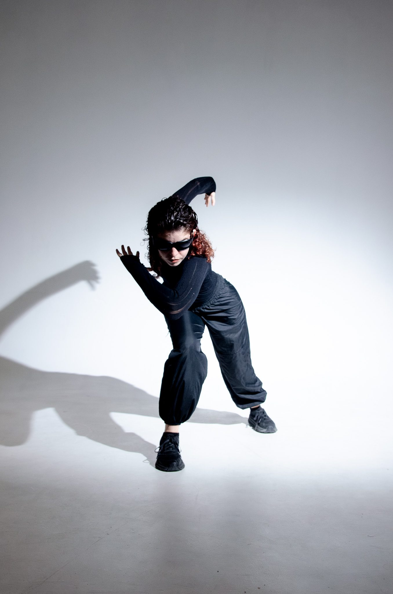
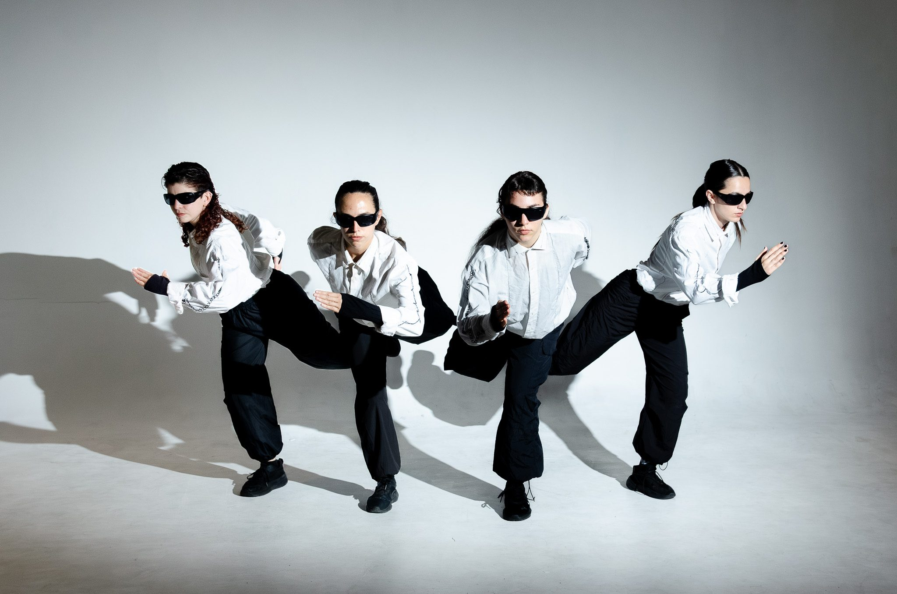
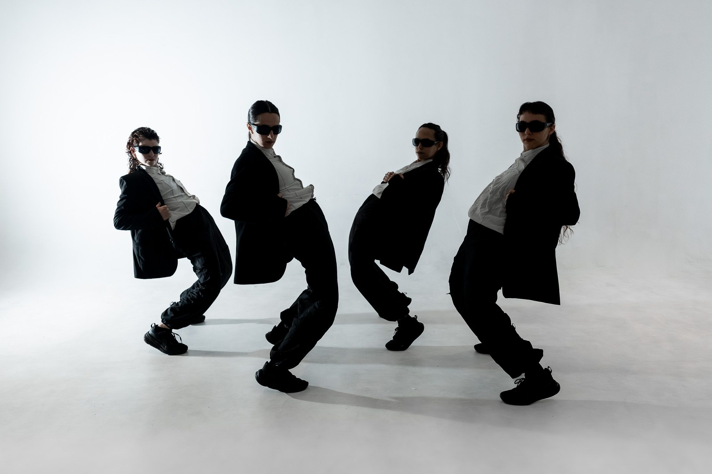

DESAFÍO A LA NOCHE
- Rol
- Codirección · Producción ejecutiva · Intérprete escénica
- Funciones
- El Cable — 2022
- Espacio Savia — 2023
- Cultural Vivo — 2025
- CorteTaza — 2026
Desafío a la noche es una performance que indaga en la noche como experiencia colectiva e íntima, como espacio de fiesta, desvarío, soledad y encuentro. La obra propone un recorrido físico y sensorial por la exaltación, el vacío y la potencia, a través de una danza rota que se entrelaza con texto y música electrónica.

